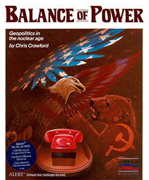
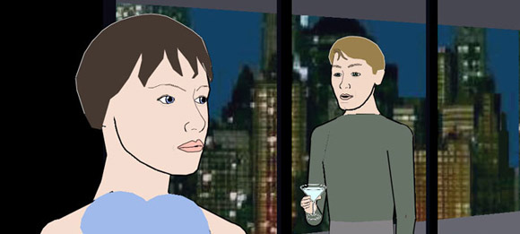

Chiffres, émotions et comportement
L'article original est écrit par Ernest Adams publié par Gamasutra (janvier 2009).
L'auteur original n'est en aucun cas reponsable de la précision de cette traduction.
Les ordinateurs ont été inventés pour manipuler des nombres. La machine à différences de Charles Babbage a été construite pour calculer des polynômes et Lady Lovelace a écrit le premier programme de sa machine analytique pour calculer ce qu'on appelle les nombres de Bernoulli. Ce n'est que bien plus tard que les ordinateurs furent utilisés pour des tâches appliquées comme l'artillerie. Et c'est encore plus tard que les jeux vidéo furent inventés. Nous avons placé une couche de vernis sur une simulation mathématique pour créer un monde imaginaire, mais souvent le vernis n'est pas très épais. C'est particulièrement visible dans les simulations économiques et les jeux de rôles. On gagne en regardant des chiffres sur un écran.

Ceci fait sens dans les simulations économiques, particulièrement celles qui sont à but éducatif. Récemment, j'ai eu la chance de pouvoir jouer à la version beta d'un drôle de petit jeu intitulé Super Energy Apocalypse de Brain Juice Games. Le game designer, Lars Doucet, le résume ainsi : « Des énergies renouvelables… et des ZOMBIES ! ». Chaque nuit, votre communauté est attaquée par des zombies (ou plus exactement, des aliens mangeurs d'ordures déguisés en zombies… C'est une longue histoire.). Pour gagner, vous devez développer des sources d'énergie non polluantes afin d'alimenter vos défenses. Les zombies adorent les fumées toxiques et les déchets nucléaires, vous devrez donc garder un œil sur votre taux de production d'énergie et sur la quantité de fumées et de déchets que vous produisez ainsi. C'était un jeu amusant et, puisqu'il se base sur de véritables systèmes pour générer de l'énergie, j'ai appris quelques petites choses.
Dans l'ensemble néanmoins, je commence à me lasser des jeux dans lesquels les mathématiques sont trop apparentes. J'aime jouer à des jeux de rôle pour l'exploration, pour l'histoire et pour la diversité de lieux et de personnages qu'ils proposent, mais je suis moins enthousiaste en ce qui concerne la marchandage et l'upgrading permanent. Cette façon d'insister sur l'équipement me semble particulièrement geek. Il n'y a pas tant de différence que ça entre se la raconter avec sa Hallebarde Flamboyante Supérieure de Raclée Majeure et se la jouer avec son PC Alienware overclocké, watercoolé et muni du dernier type de DEL à la mode.
Les RPG sont basés sur l'évolution des personnages, mais cette évolution est exprimé en termes numériques. A la fin du jeu, votre personnage est plus rapide, plus fort, plus adroit, etc. Les chiffres le prouvent. Mais dans ce cas-là, il pourrait aussi bien être un robot qu'un être humain. On n'accorde que très peu de place à ce qu'on pourrait appeler une évolution psychologique du personnage — une évolution en tant que personne.
Je commence donc à penser à des jeux où les chiffres seraient remplacés par un comportement. Bien sûr, de nombreux jeux utilisent des automates finis (NDT : pour plus de précisions, je vous renvoie à la page Wikipédia sur le sujet. Pour faire simple, c'est ici une forme d'IA très simple où l'on peut se retrouver dans un seul état à la fois) pour les IA de leurs personnages et ces automates récupèrent des valeurs numériques en entrée (« Si l'ennemi est à portée, passer en mode attaque »). Mais ces automates ne changent pas — les personnages n'évoluent pas et n'apprennent pas à modifier leur comportement. Et comme l'a fait remarqué le designer et professeur Michael Mateas, les automates finis ne peuvent pas marcher et mâcher du chewing-gum en même temps — c'est-à-dire qu'ils ne peuvent occuper qu'un état à la fois, ce qui leur interdit de mettre en œuvre des actions complexes.
Un exemple ancien de « personnage » qui changeait en apparence d'humeur et de comportement de façon complexe apparaît dans le jeu Balance of Power de Chris Crawford. J'ai déjà écrit souvent au sujet de ce jeu parce qu'il est à la fois brillant et unique — une simulation de gestion géopolitique avec deux superpuissances, une idée qui, à ma connaissance, n'a jamais été reprise depuis. Il s'agissait d'un jeu à un seul joueur. Vous jouiez soit les Etats-Unis, soit l'URSS et vous deviez essayer de maximiser le prestige de votre pays aux dépends de l'autre camp, en partie en leur faisant face lors de crises diplomatiques (la crise des missiles de Cuba en est le plus célèbre exemple réel). A tour de rôle, les deux camps entreprenaient des actions diplomatiques variées (comme la formation d'alliances) dans d'autres pays du monde et au tour suivant, chaque camp avait la possibilité de s'opposer aux actions de l'autre camp — une crise. Quand une crise survenait, l'un des deux camps devait finir par céder. Il était essentiel de choisir soigneusement sur quels conflits intervenir, car si vous provoquiez une guerre nucléaire, vous aviez perdu.

Balance of Power a été un tel succès que Crawford a écrit un livre qui expliquait comment le jeu fonctionne, avec toutes les équations utilisées. Le livre s'intitulait Balance of Power : International Politics as the Ultimate Global Game. Il est depuis longtemps en rupture de stock, mais Crawford en a fait une version texte disponible sur son site.Je pense qu'il s'agit d'une lecture essentielle pour tout game designer : une explication claire et intelligente de la façon de convertir des formules mathématiques en comportements.
Il n'y avait pas à proprement parler de personnages dans Balance of Power, mais les actions de l'IA ennemie donnaient dans une certaine mesure l'impression qu'il s'agissait d'un vrai gouvernement, et Crawford a renforcé ce sentiment avec le langage diplomatique utilisé pour annoncer les actions de chaque camp. Les annonces pouvaient être fermes ou conciliantes selon la façon dont le camp adverse se « sentait ». Crawford a créé une variable appelée la pugnacité pour chaque camp et une autre appelée la tension pour l'ensemble du jeu. La pugnacité était initialisé à une valeur aléatoire proche de la valeur neutre (plus haute pour les Russes que les Américains ; cette vision du monde est aujourd'hui un peu dépassée) et augmentait ou diminuait à mesure que la superpuissance adoptait un comportement agressif ou conciliant respectivement. La tension général du jeu augmentait avec les activités militaires et les crises et ne diminuait qu'avec le temps.
Comme Crawford l'écrit dans son livre, « Ces deux variables ont pour effet de créer une ambiance dans le jeu. Les joueurs qui mènent des stratégies de confrontation augmenteront la pugnacité de leur camp et la tension du jeu. Si c'est fait correctement, une stratégie aussi impitoyable encourage les nations plus faibles à « finlandiser » avec le joueur (NDT : dans le domaine politique, le verbe anglais to finlandize signifie ne pas chercher à défier une puissance plus importante tout en conservant la souveraineté nationale. C'est un terme péjoratif souvent associé avec une idée de lâcheté. Ici il s'agit de s'aligner diplomatiquement sur le joueur, plutôt que de chercher à s'opposer à lui.). Mais de petites erreurs peuvent amener la pugnacité de l'ennemi à augmenter et la votre à baisser si vous vous retrouvez à céder trop souvent au cours de crises diplomatiques. »
Si vous jouez suffisamment longtemps au jeu, vous pouvez effectivement ressentir cette ambiance. Des actions agressives vont amener l'autre camp à devenir lui aussi plus agressif, mais si vous vous montrez trop peu sûr de vous, les petits pays auront tendance à penser que vous êtes faibles et à s'allier avec l'autre camp. Vous pouvez tout à fait sentir lorsqu'on ne vous respecte pas. La pugnacité, le respect diplomatique et le prestige géopolitique sont des concepts émotionnels qu'on ne voit pas souvent dans le jeu vidéo, et a fortiori en 1985 quand Balance of Power est sorti.
Il y a quelque chose comme cinq ans, j'ai écrit un article intitulé « Quel failles peuvent bien se cacher dans le cœur des PNJ ? ». Dans celui-ci, je discute du sujet de la création de personnages véritablement tridimensionnels — des personnages qui se comportent de façon apparemment incohérente (et donc réaliste) parce qu'ils sont confrontés à des conflits internes. Par exemple, au lieu de caractériser les sentiments d'une personne pour une autre avec une seule variable chiffrée qui varie du négatif (je le hais) au positif (je l'aime), imaginez que nous utilisions deux variables, l'une pour l'amour et l'autre pour la haine. S'il y a beaucoup d'amour et pas de haine, les deux personnages vont être amis (ou plus si affinités !). S'il y a beaucoup de haine et pas d'amour, ils seront ennemis. Mais il pourrait y avoir aussi beaucoup des deux, ce qui peut arriver en certaines circonstances. Il faudrait alors élaborer un système de comportement qui permette d'exprimer ce conflit interne.
Je ne sais pas exactement comment fonctionne Façade, un jeu expérimental brillant sur le thème d'un mariage qui s'effondre par Michael Mateas et Andrew Stern, mais les personnages éprouvent véritablement des sentiments complexes les uns vis-à-vis des autres. Les Sims aussi parviennent à transformer des chiffres en comportements — quoique d'une façon peut-être un peu moins sophistiqué que dans Façade. Façade tourne autour d'un couple de personnages et de leur ami, le personnage incarné par le joueur.

Les Sims permettent au joueur de créer n'importe quel type de personnage dont il a envie, il est donc nécessaire qu'il dispose d'un modèle de relations et de comportements générique, qui peut fonctionner pour tout le monde. Mais dans les deux cas, ces jeux produisent un résultat sous forme d'interactions humaines. Le joueur ne reçoit pas de chiffres ou de jauges. Il n'est pas censé penser les personnages du jeu en termes de simulation, mais en tant que véritables personnes.
Façade utilise le langage, ce qui introduit toutes sortes de complications — parce qu'une conversation doit pouvoir se dérouler de façon intelligible même si les mots choisis reflètent l'état émotionnel du personnage. Les Sims utilisent uniquement le Simlish (NDT : un faux langage inventé pour le jeu, qui n'a pas de sens véritable mais dont la sonorité imite une vraie conversation) mais les personnages expriment les sentiments à travers les symboles qui apparaissent à l'écran et ils doivent prendre certaines décisions : dois-je continuer à parler à cette personne ou arrêter et partir ? Dois-je interagir physiquement avec lui ou elle, le ou la prendre dans mes bras, l'embrasser, le ou la gifler, me battre avec lui ou elle ? Un tel système est extrêmement compliqué à développer et encore plus compliqué à tester, tout particulièrement si les personnages sont capables de ressentir des émotions complexes. Si un personnage se comporte de façon contradictoire, est-ce un bug ou est-ce une expression légitime de ses sentiments ?
Je pense qu'il y a un autre domaine où nous pourrions améliorer la simulation d'émotions et ainsi produire des comportements plus riches. Parfois dans un film, on voit une scène dans laquelle une femme est effrayée ou fâchée par ce que l'homme qu'elle aime a fait. Elle le frappe, elle lui jette des insultes au visage et tout d'un coup elle s'effondre en pleurant dans ses bras. Sa colère se dissipe presque immédiatement et elle lui pardonne — tout particulièrement si le public sait que ce n'est pas vraiment de sa faute — car son amour pour lui et son désir d'être consolée prennent le dessus.
L'homme ne fait rien si ce n'est accepter les injures puis de la réconforter quand elle s'effondre. Marion Ravenwood le fait à Indiana Jones dans Les Aventuriers de l'Arche Perdue et j'ai vu ça dans plusieurs autres films, mais jamais dans un jeu vidéo. C'est une sorte d'astuce, dramatiquement parlant — on ne voit pas ça souvent dans la vie réelle. Mais le but d'une simulation d'émotions humaines est justement de produire des effets dramatiques dans un médium qui est, pour l'instant, dramatiquement dépourvu de vie. Si je mentionne cet exemple, c'est parce qu'il illustre bien un mécanisme que nous n'utilisons pas souvent.
La plupart des simulations émotionnels utilisent une simple boucle stimulus/calcul/comportement. Quelqu'un dit ou fait quelque chose à un personnage. Ceci influence son état émotionnel. Il agit en fonction de ses sentiments. Cet état émotionnel peut revenir à un état plus neutre avec le temps (j'étais en colère il y a une demi-heure, mais maintenant, je me suis calmé) ou changer en réponse à une stimulation d'un autre personnage. Si ces systèmes ont l'avantage d'être vraiment simples, ils produisent des résultats absurdes : un personnage est furieux puis une seconde plus tard il est joyeux, comme un personnage de cartoon de Warner Bros. C'est le genre de chose que vous obtenez avec un automate fini.
Cette approche ne tient pas compte du fait que le comportement en lui-même modifie les émotions. Le comportement n'est pas juste une façon de rendre nos émotions visible : il affecte aussi la façon dont nous nous sentons. Il agit sur notre état émotionnel. Quand une femme se dispute avec son amoureux dans un film, l'acte de frapper quelqu'un qu'elle aime fait disparaître sa colère et elle commence à chercher du réconfort parce qu'elle a subi cette expérience traumatique et ces sentiments violents. Nous frappons dans un oreiller ou donnons un coup de pied au chien. Ceci ne correspond pas à un comportement qui vise à satisfaire un besoin, comme dans Les Sims, parce que frapper un oreiller ne fait pas disparaître la source du problème. Tout ce que cela fait, c'est d'alléger l'esprit (Mark Twain a écrit : « Quand vous êtes en colère, comptez jusqu'à quatre. Si vous êtes vraiment très en colère, jurez. »). Mais je pense que c'est quelque chose que l'on peut incorporer à un jeu sans trop de difficultés.
En fonction du caractère d'un individu, les comportements peuvent dissiper une émotion ou la renforcer. Dans l'exemple que j'ai donné, la colère de la femme disparaît parce qu'elle n'est pas habituellement une personne violente. En fait, le seul fait d'agir violemment la fait se sentir mal. D'un autre côté, dans le cadre de vraies violences conjugales, l'agresseur devient souvent de plus en plus furieux à mesure qu'il frappe la victime. Ils ne s'arrêtent que lorsque la victime a complètement arrêter de réagir. Leur machinerie émotionnelle est sévèrement abîmée. Ce n'est pas un sujet particulièrement joyeux, mais je pense qu'on peut le simuler dans un jeu s'il y a un vrai besoin dramatique pour cela.
Afin de faire réellement évoluer un personnage dans un sens psychologique (et dans cet exemple, une spirale tragique vers l'auto-destruction), nous devons créer une méta-simulation — une simulation capable d'altérer la base émotionnelle avec laquelle le jeu commence. Ceci pourrait prendre la forme de quelque chose qui interrompt la boucle stimulus/calcul/comportement et redéfinit ses variables. Un événement-clef pourrait transformer une rétroaction négative en une rétroaction positive, ou inversement.
La drogue est un exemple classique de spirale tragique. Supposons qu'un personnage accro à la drogue rencontre quelqu'un — un professeur charismatique par exemple — qui soit capable de lui apporter le réconfort émotionnel qu'il cherchait à l'origine dans la drogue. Cette source alternative de réconfort pourrait briser la dépendance à la drogue, en la remplaçant par une nouvelle dépendance vis-à-vis du professeur, ce qui pourrait à son tour introduire de nouveaux problèmes dans l'histoire.
Je vous dirai tout de suite que je ne suis pas certain de la façon de procéder. Tant que quelqu'un ne me finance pas, je peux écrire des articles, mais pas de code. Mais je suis convaincu que ceci peut être réalisé suffisamment bien pour créer un jeu à la fois divertissant et crédible. Je ne propose pas que nous visions un réalisme psychologique absolu — après tout, la psychanalyse en est encore au stade de l'enfance. Je suggère plutôt que nous essayions d'introduire plus de richesse dans nos simulations, afin de produire chez l'IA de nos personnages des comportements dramatiquement intéressants.
Les personnages de jeu sont pour l'instant beaucoup trop rationnels et leur comportement est assez proche de celui de Vulcains (NDT : le peuple extraterrestre dont fait partie Monsieur Spock dans Star Trek et qui ne réagit que sur des bases purement logiques et non émotionnelles) : ils réagissent à des stimuli pour accomplir leur buts. Les personnes réelles ne sont pas comme ça. Elles agissent contre leur propre intérêt, elles font des choses irrationnelles, elles font même des choses complètement stupides. Il y a beaucoup d'opportunités pour l'expérimentation.
Ajouter un commentaire
Commentaires

Simlish ça fait Sim + yidish ;)

Civilization 4 est une bonne illustration du début de cet article, pour son utilisation éclairée des chiffres. Ils servent à la fois à représenter un game design simple mais profond, et à fertiliser l'imagination du joueur.
Je pense au concept de culture, qui représente par une simple addition (la culture est cumulative) la puissance culturelle d'une ville et son influence géographique. Les ressources, représentées par des bonus clairs accordés aux cases sont immédiatement compréhensibles par le joueur, et fournissent à l'imagination un objectif intéressant (je VEUX cette mine de pierre précieuse pour montrer la prospérité et la supériorité de ma civilisation). Le commerce qui, s'il s'effectue automatiquement, ne donne pas moins un retour là aussi évident, et propice au rêve (ma ville de Paris commerce avec la lointaine Samarcande — ah ah, je suis le maître des mers).

Visiblement, il y a une petite confusion ^^': je n'ai pas écrit l'article, je l'ai seulement traduit depuis l'anglais. Il s'agit d'un article d'Ernest Adams daté de 2009 (c'est marqué au début de l'article).
"Le jeu dont vous parlez au début, en bêta-test ?" Je vous rappelle que cet article est une traduction d'un texte de 2009.
Article très intéressant ! C'est un sujet auquel on ne réfléchit pas assez souvent, j'aimerai bien travailler là dessus et programmer une petite simulation de vie qui se concentre sur cette aspect (mais bon, on verra :) ). D'ailleurs, je ne vous comprend pas quand je lis "Tant que quelqu'un ne me finance pas, je peux écrire des articles, mais pas de code". A écrire ça, ça ne vous donne pas envie de vous lancer dans un projet qui relèverait ce défis ? (bon, désolé, j'arrive comme un cheveux dans la soupe, je ne connais pas vos projet en cours, ni le temps dont vous disposez)
Le jeu dont vous parlez au début, en bêta-test ? Il est jouable depuis bel lurette sur Kongregate : http://www.kongregate.com/games/larsiusprime/super-energy-apocalypse-recycled Une nouvelle version peut être ? :) (je n'ai pas fini ce jeu à 100% mais j'en garde un bon souvenir, justement grâce à l'aspect énergie/pollution assez original)